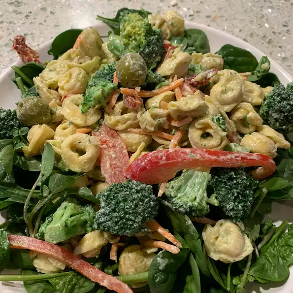

Tortelini Pesto Salad

Description
Wonderful pasta salad. So different from the Italian dressing pasta salads. Very hearty side dish or main dish for lunch. Crunchy veggies and rich pesto sauce.
Ingredients
- 1 (9 ounce) package cheese tortellini
- 1 small red bell pepper, julienned
- ¾ cup broccoli florets, blanched
- ⅓ cup shredded carrots
- ⅓ cup pitted green olives
- 1 clove garlic, chopped
- ½ cup mayonnaise
- ¼ cup prepared basil pesto
- ¼ cup milk
- 2 tablespoons grated Parmesan cheese
- 1 tablespoon olive oil
- 1 tablespoon distilled white vinegar
- 1 bunch fresh spinach leaves
Steps
- Bring a large pot of lightly salted water to a boil. Place tortellini in the pot, and cook for 7 to 8 minutes, until al dente. Drain, and cool.
- In a large bowl, mix the cooked tortellini, red bell pepper, broccoli, carrots, olives, and garlic.
- In a separate bowl, stir together the mayonnaise, pesto, milk, Parmesan cheese, olive oil, and vinegar. Pour over the tortellini and vegetables, and gently toss to coat. Cover, and place in the refrigerator 1 hour, until chilled. Serve over spinach leaves.